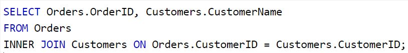

How inner join works:
In one sentence, inner join works by finding the intersection betweem two sets. Here is an example.

SELECT and FROM are still the same as other basic SQL function. The INNER JOIN helps to bind another dataset and the ON is just the conidtion you want to have, which in this case, is the mathced CustomerID
Data scientist is a scientist who will find new discoveries by investigating the data through using algorithim. It is a really important profession as it provides the knowledge that humans are hard to see by themselves.
Data Scientist vs Computer Science
In general, computer science takes care more business such as AI, web-design, software engineering, etc., while the data science only focus on how to play with the data. In another way to say that, computer scientists create a lot of things to make life eaiser, and luckily, data scientists benefit from it and apply such to analyze the data. Data scientists definitely need some of the skills (language) of computer science as they need those to create some sorts of data structure to organize the big data. Without those languages, data scientists are the same as those who do purly statistics. Overall, computer science helps develop the platform for data scientists to do their magic. It is safe to say that there is no data science if there is no computer science.